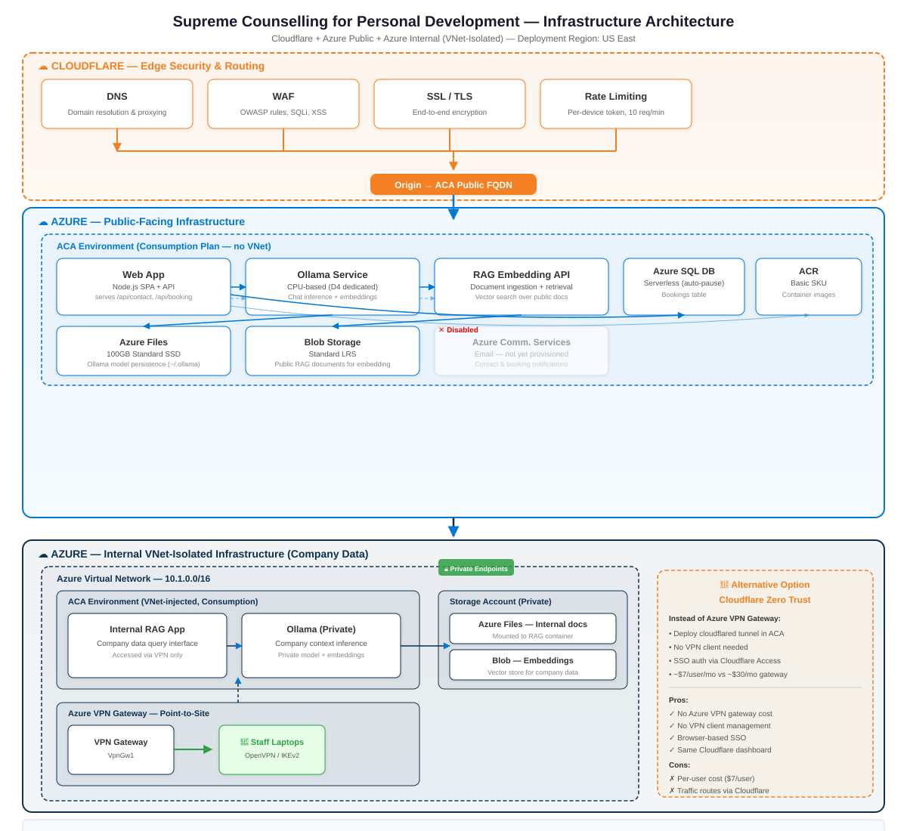

Azure Cloud Infrastructure Proposal
Cloudflare Edge Azure (Public) Azure (Internal)
This proposal details an Azure-hosted infrastructure for Supreme Counselling for Personal Development serving two user groups:
The architecture uses Azure Container Apps (pay-per-second consumption plan) fronted by Cloudflare for DNS, WAF, SSL, and rate limiting. Public and internal data are kept in separate storage — no shared databases, no complex RBAC.
The estimated monthly cost is ~BBD $140–240 depending on usage, with the primary variable being AI inference load. Staff access to the internal system has two options presented in Section 7 for your decision.

| Service | Purpose |
|---|---|
| DNS | Domain resolution, proxied records |
| WAF | OWASP Top 10 rules, custom rate limiting |
| SSL/TLS | Full Strict encryption, automatic cert management |
| Rate Limiting | 10 requests/min per device (JWT cookie) on API endpoints |
| Resource | SKU / Config | Purpose |
|---|---|---|
| ACA Environment | Consumption (no VNet) | Free container orchestration layer |
| Container App — Web | Consumption, 0.25 CPU | Node.js SPA + API |
| Container App — Ollama | Consumption, 1.0 CPU | Chat + embeddings |
| Container App — RAG API | Consumption, 0.5 CPU | Public document retrieval |
| Azure SQL Database | Serverless, GP_S_Gen5_1, auto-pause 60min | Bookings |
| Azure Files | 100GB Standard SSD | Ollama model storage |
| Blob Storage | Standard LRS | RAG documents |
| Container Registry | Basic SKU | Container images |
| Log Analytics | Per-GB | Monitoring & logs |
| Comm. Services | Free tier (placeholder) | Email notifications |
| Resource | SKU / Config | Purpose |
|---|---|---|
| Virtual Network | 10.1.0.0/16 | Isolated network |
| ACA Environment | VNet-injected | Containers inside VNet |
| Container App — Internal RAG | Consumption, 0.5 CPU | Company data queries |
| Container App — Priv. Ollama | Consumption, 0.5 CPU | Private inference |
| Storage Account | Standard LRS + Private Endpoints | Internal docs + embeddings |
| Azure Files (Int.) | 100GB Standard SSD | Company documents |
All prices in Barbadian Dollars (BBD) at the pegged rate: 1 USD = 2 BBD. Based on US East pricing.
| Resource | SKU / Detail | BBD/mo |
|---|---|---|
| ACA — Web App | Consumption, 0.25 CPU | ~$30 |
| ACA — Ollama (Public) | Consumption, 1.0 CPU | ~$60 |
| ACA — RAG Embedding API | Consumption, 0.5 CPU | ~$30 |
| ACA Env (Public) | Consumption plan | $0 |
| ACA Env (Internal) | Consumption + VNet injection | ~$20 |
| ACA — Internal RAG + Ollama | Consumption, 0.5 CPU × 2 | ~$60 |
| Azure SQL Database | Serverless, 1 vCore, auto-pause | ~$20–60 |
| Azure Files (Ollama) | 100GB Standard SSD | ~$24 |
| Azure Files (Internal) | 100GB Standard SSD | ~$24 |
| Blob Storage (Public) | Standard LRS, 10GB | ~$2 |
| Blob Storage (Internal) | Standard LRS, 50GB | ~$6 |
| Container Registry | Basic SKU | ~$10 |
| Log Analytics | Per-GB ingestion | ~$10–30 |
| Azure Comm. Services | Free tier (1k emails/mo) | $0 |
| Cloudflare | Free plan | $0 |
| Subtotal (infrastructure) | ~$100–160 | |
| Staff access | Your choice below | + $0 or + $60 |
| Total | ~$100–220 |
| Scenario | Action | Cost Impact |
|---|---|---|
| Traffic increases | Increase ACA max replicas (3 → 10) | Scales per request, auto-scales down |
| More staff | Adjust VPN gateway or add Zero Trust users | Minimal |
| More data | SQL auto-scales; upgrade to Provisioned | ~2× if always active |
| Heavy AI usage | Dedicated CPU profile or GPU VM (NCas T4) | +$60–700/mo |
| Need Kubernetes | Migrate ACA → AKS (same containers) | +$75–150/mo |
Both options give your staff secure access to the internal RAG system. The difference is how they connect and how much it costs.
Cost: BBD $60/mo (fixed)
Setup: Staff install VPN client
Auth: Certificate or Azure AD
| Aspect | Detail |
|---|---|
| Type | Point-to-Site VPN (OpenVPN / IKEv2) |
| Access level | Full network (L3) — any resource in the VNet |
| Client needed | Yes — Azure VPN Client app |
| Always-on cost | BBD $60/mo regardless of usage |
| Pros | Full network access No per-user fees Traffic stays on Azure backbone |
| Cons | Client install & management Fixed cost even when idle Certificate rotation overhead |
Cost: BBD $0/mo (Free for up to 50 users)
Setup: Browser-based, no client
Auth: SSO (Google, Microsoft, etc.)
| Aspect | Detail |
|---|---|
| Type | Cloudflare Tunnel + Access (application-layer) |
| Access level | App-level (browser) — specific URLs only |
| Client needed | No — any browser |
| Always-on cost | $0 on Free plan (up to 50 users) |
| Pros | No client to manage Browser SSO — staff just log in Free for your team size Same Cloudflare dashboard as rest of stack Built-in audit logs |
| Cons | App-level access only (not full network) Traffic routes through Cloudflare edge Requires cloudflared sidecar container |
enable_vpn_gateway = true toggle in the OpenTofu config.
| Module | Resources | Conditional? |
|---|---|---|
| Cloudflare | DNS records, WAF rules, rate limiting rule set | Always |
| Azure Public | RG, ACA env, 3 container apps, SQL DB, storage, ACR, Log Analytics | Always |
| Azure Internal | RG, VNet, ACA env (VNet-injected), 2 container apps, storage + private endpoints | Always |
| VPN Gateway | VPN gateway, local gateway, connection config | Toggle (enable_vpn) |
| Cloudflare Zero Trust | Tunnel, access application, service token | Toggle (enable_zt) |
| Comm. Services | Azure Communication Service resource (placeholder) | You provision email key manually |